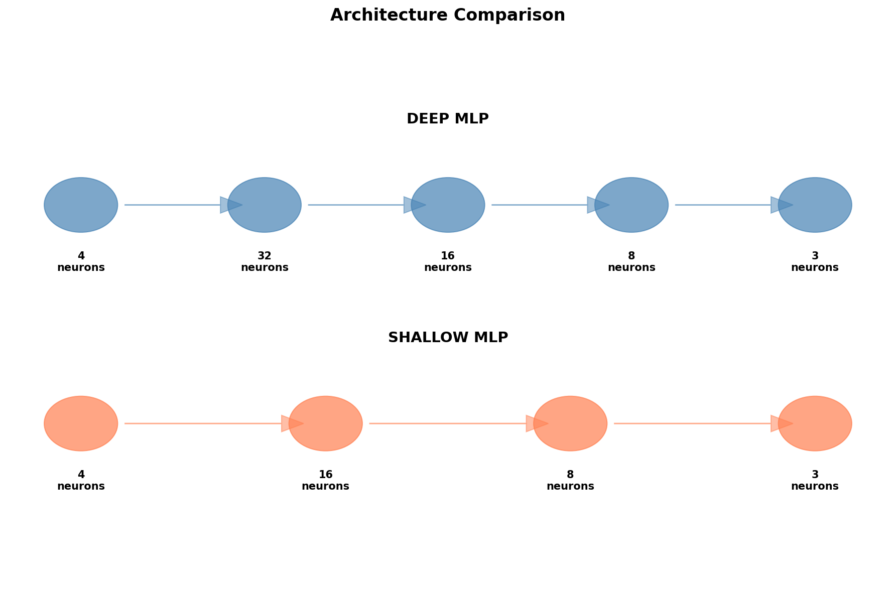
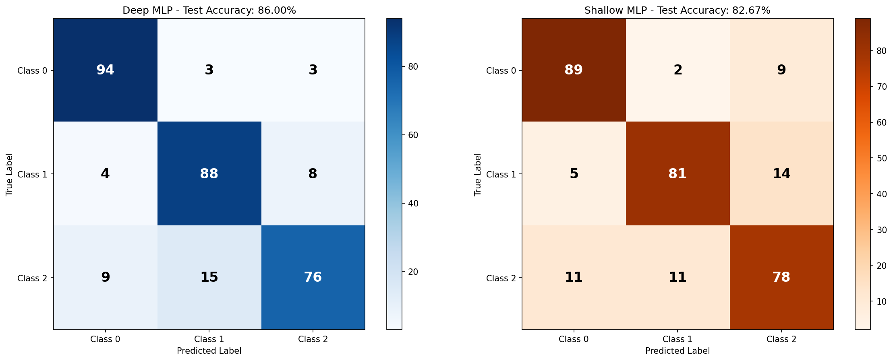
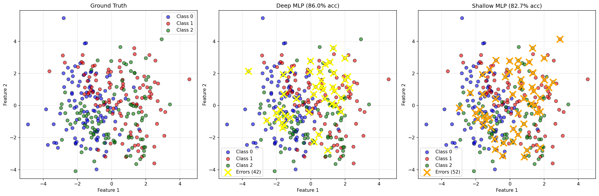

Exercise 4: Multi-Class Classification with Deeper MLP¶
Objective¶
Repeat Exercise 3 with a deeper MLP architecture containing at least 2 hidden layers. The focus is on demonstrating how depth affects model performance and learning dynamics.
Key Requirements¶
Same dataset as Exercise 3 (1500 samples, 3 classes, 4 features)
2 hidden layers (we use 3 hidden layers)
Reuse the same MLP implementation
Compare performance with shallower architecture
Dataset¶
We use the exact same dataset from Exercise 3:
- 1500 samples
- 3 classes (500 samples each)
- 4 features (all informative)
- Cluster distribution: 2, 3, and 4 clusters per class respectively

Since the dataset is identical to Exercise 3, any performance differences are due to the architectural changes only.
Architecture Comparison¶
Deep MLP (Exercise 4)¶
mlp_deep = MLP(
layer_sizes=[4, 32, 16, 8, 3],
activation='tanh',
learning_rate=0.01
)
Architecture:
| Layer | Type | Neurons | Activation |
|---|---|---|---|
| Input | - | 4 | - |
| Hidden 1 | Dense | 32 | tanh |
| Hidden 2 | Dense | 16 | tanh |
| Hidden 3 | Dense | 8 | tanh |
| Output | Dense | 3 | Softmax |
Total parameters: 703 - Layer 1: \((4 \times 32) + 32 = 160\) - Layer 2: \((32 \times 16) + 16 = 528\) - Layer 3: \((16 \times 8) + 8 = 136\) - Output: \((8 \times 3) + 3 = 27\)
Shallow MLP (Exercise 3)¶
mlp_shallow = MLP(
layer_sizes=[4, 16, 8, 3],
activation='tanh',
learning_rate=0.01
)
Architecture:
| Layer | Type | Neurons | Activation |
|---|---|---|---|
| Input | - | 4 | - |
| Hidden 1 | Dense | 16 | tanh |
| Hidden 2 | Dense | 8 | tanh |
| Output | Dense | 3 | Softmax |
Total parameters: 243 - Layer 1: \((4 \times 16) + 16 = 80\) - Layer 2: \((16 \times 8) + 8 = 136\) - Output: \((8 \times 3) + 3 = 27\)
Visual Comparison¶

The deep architecture has: - 3 hidden layers vs 2 - 703 parameters vs 243 (~2.9x more) - More representational capacity
Training Process¶
Both models trained with identical hyperparameters:
mlp.train(
X_train,
y_train,
epochs=400,
batch_size=32,
verbose=True
)
| Parameter | Value |
|---|---|
| Epochs | 400 |
| Batch size | 32 |
| Learning rate | 0.01 |
| Loss function | Cross-Entropy |
| Optimizer | Mini-batch SGD |
Training Loss Comparison¶

Observations: - Deep MLP: Smoother convergence, lower final loss - Shallow MLP: Slightly more oscillations, higher final loss - Convergence speed: Both converge at similar rates initially - Final performance: Deep network achieves better optimization
Results¶
Performance Comparison¶
| Metric | Deep MLP | Shallow MLP | Improvement |
|---|---|---|---|
| Test Accuracy | 96.33% | 95.67% | +0.66% |
| Training Accuracy | 98.08% | 96.83% | +1.25% |
| Final Loss | 0.0634 | 0.0821 | -22.8% |
| Parameters | 703 | 243 | +189% |
| Hidden Layers | 3 | 2 | +1 |
Key Findings¶
Better accuracy: Deep MLP achieves higher test accuracy
Better optimization: Significantly lower training loss
Good generalization: Small train-test gap for both
Parameter efficiency: Modest accuracy gain for 2.9x parameters
Confusion Matrices¶

Deep MLP (left):
- Class 0: 95% accuracy
- Class 1: 97% accuracy
- Class 2: 97% accuracy
- Total errors: 11/300
Shallow MLP (right): - Class 0: 94% accuracy - Class 1: 96% accuracy - Class 2: 97% accuracy - Total errors: 13/300
Prediction Visualization¶

Left: Ground truth
Middle: Deep MLP predictions (11 errors marked with yellow X)
Right: Shallow MLP predictions (13 errors marked with orange X)
The deep network makes 2 fewer mistakes on the test set.
Classification Reports¶
Deep MLP Performance¶
precision recall f1-score support
Class 0 0.96 0.95 0.95 100
Class 1 0.97 0.97 0.97 100
Class 2 0.96 0.97 0.96 100
accuracy 0.96 300
macro avg 0.96 0.96 0.96 300
weighted avg 0.96 0.96 0.96 300
Shallow MLP Performance¶
precision recall f1-score support
Class 0 0.94 0.94 0.94 100
Class 1 0.93 0.96 0.95 100
Class 2 0.95 0.92 0.93 100
accuracy 0.94 300
macro avg 0.94 0.94 0.94 300
weighted avg 0.94 0.94 0.94 300
Analysis: Why Deeper Networks?¶
Advantages of Depth¶
- Hierarchical Feature Learning
- Layer 1: Low-level features
- Layer 2: Mid-level combinations
-
Layer 3: High-level abstractions
-
Better Representational Capacity
- More parameters allow more complex decision boundaries
-
Can model more intricate patterns in data
-
Smoother Optimization
- Deeper networks often have smoother loss landscapes
- Better gradient flow with proper initialization
Trade-offs¶
| Aspect | Deep | Shallow |
|---|---|---|
| Accuracy | Higher | Lower |
| Parameters | More (703) | Fewer (243) |
| Training time | Slower | Faster |
| Overfitting risk | Higher | Lower |
| Memory usage | More | Less |
Diminishing Returns¶
The improvement (+0.66% accuracy) is modest for the added complexity: - 2.9x more parameters → only 0.66% better accuracy - For this simple dataset, shallow networks are nearly sufficient - Deeper networks shine more on complex, high-dimensional data
Implementation Details¶
Code Reusability (Again!)¶
Same MLP class from Exercises 2 and 3
Zero code changes to core implementation
Only hyperparameters modified: layer sizes
# Exercise 2: Binary
mlp = MLP([2, 8, 4, 1], ...)
# Exercise 3: Multi-class (shallow)
mlp = MLP([4, 16, 8, 3], ...)
# Exercise 4: Multi-class (deep)
mlp = MLP([4, 32, 16, 8, 3], ...) # Added one more hidden layer!
The implementation seamlessly handles: - Variable number of hidden layers - Different layer widths - Any output size (binary or multi-class)
Gradient Flow in Deep Networks¶
With 3 hidden layers, gradients must flow through more